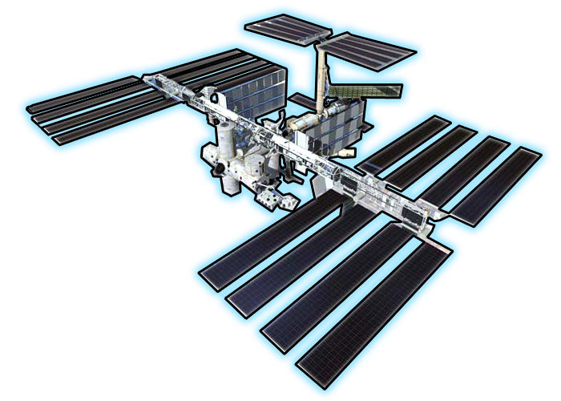

Live Data Feed
Time Stamp:
Longitude: °
Latitude: °
Altitude: km
Speed: km/h
Astronauts Onboard
The International Space Station Program brings together international flight crews, multiple launch vehicles, globally distributed launch and flight operations, training, engineering, and development facilities, communications networks, and the international scientific research community.
APIs Used:
ISS API, Open Notify API & Google Maps API